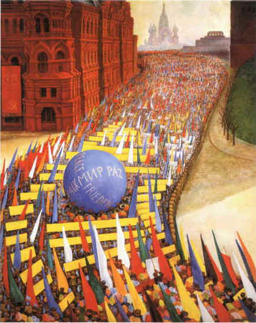

Chapter 13 - The Communist Era (Part 2)
After 7 years with the Redmond and Sisters Oregon mill, I started up a portable mill of my own and took a contract to build a big mill at La Pine, Oregon. I got the mill to sign a contract with the union. Shut down the work of construction in order for the crew to hear a union organizer. Lost the mill building contract. Ran my own mill for 8 months. Went bankrupt. Started up a lath mill in spare time while working on the river for Shevlin-Hixon Company at Bend, Oregon. Moved lath mill to Elkton, Oregon and set up to saw handle squares out of waste. Three years of this and the mill burned. Back on the log pond at Burney, California. Shut down, thence to Arcata, California then Fort Seward, California.
Then came the big lumber slump of 1957-58. At its peak, Humboldt and Del Norte [counties] had 30% of labor force out of work. Nobody was doing a damn thing about it. The churches were swamped with calls for help. Organized labor sat on it's hands and what few Communists I knew there were only "going along" with labor-instead of trying to LEAD labor! They told me I was "outdated" when I suggested unemployment organization, as if the class struggle was EVER outdated-under Capitalism!
Came October of 1957 and the mills still shut down with thousands of workers unemployed, and a good many of them had exhausted their unemployment claims.
I had been denied unemployment compensation because of their wrong ruling, "quit without good cause". I was mad as a hornet because I had several good and sufficient causes to quit, so I appealed the case, and with the help of two unions, I won. That gave me $250 in one check, so I went to a second hand shop, bought a mimeograph, went to [an] office supplies store and bought mimeo paper, ink, stencils, and then I thought I would by God show 'em!
When I showed up at Fort Seward, California with all that gear my youngest son who was there says, "My God Dad, what you going to do?"
"Well Benny," I says "I'm going to start up a SOB of a newspaper, that's what I'm gonna do." That was the start of the Lumberjack News that was to become a National, even an INTERNATIONAL newspaper.
We based the paper on two past policies of the Communist Party, namely unemployed organization and rank & file union activity. Meantime, people were visiting us and asking advice such as: "what are we going to do? Our unemployed compensation has run out and we are next door to [being] hungry!" Now THERE was an organizational problem if I ever saw one! I suggested unemployed organization, so that evening a bunch of us met, drew up a preamble to constitution, as well as statement of policy, and a union constitution. We labored at it until morning and came up with the following preamble to the constitution of the "Unemployed Workers of America". We copied this preamble for the most part from the preamble of the once great "Workers Alliance of the dirty thirties".
- Preamble to the Constitution of the Unemployed Workers of America.
- General Policy of the Unemployed Workers of America.
At the first meeting of the new union we drew up a petition to the welfare set-up in Eureka demanding that they change their policy of "No help to employable people". We secured some 500 signatures and the five man executive board of the union invaded a meeting of the board of county supervisors and presented the petitions to a flabbergasted board. We also demanded that in view of the fact of 30% of the labor force unemployed, that the timber districts be declared. "Distressed Area" so that more surplus food could be sent in by the Federal Government.
The Humboldt Times and Humboldt Standard wanted a copy of our demands for publication, which we gave them.[1] Radio and television were also on hand.
The Supervisors and press were not the only ones that were shook up. The President of the [Humboldt County] Central Labor Council was on hand and he was a worried man! He came running back to the Labor Temple and got his henchmen together and told them, "boys, we simply have GOT to do something about unemployment, like setting up a big community organization, or something on that order, because if we don't, the Commies will take over! They are down at the Supervisors meeting right now with petitions from southern Humboldt County!
The final result of our unemployed activity was that the AFL-CIO DID indeed set up a big county-wide organization. The area was classified "distressed" and surplus food was issued to the unemployed. The County instituted work projects for the unemployed with the highest wage scale in the state, by that I mean that Humboldt county led all counties in the state for wage scale on relief projects. Our activity also got the ruling of "no help for employable people" nullified. And this was what the Communist Party called "outdated" and "living in the past". Yes, the Communist Party of 1930 has no resemblance to the present so-called Communist Party which resembles what one of our guys called, "a bladeless knife without a handle". We spread the word of our successful unemployed campaign nationally through the Lumberjack News, and we had calls for bundle orders for the paper from New York, Buffalo, Chicago, Seattle, Portland, Los Angeles, and a score or lesser cities. However-business picked up, and that practically ended the "Unemployed Workers of America." Four of us on the executive board met the next winter, wrote a letter to the Humboldt County supervisors demanding another county works project-and they complied.
To sum up, the master class and their stooges are no match for labor organization. They have forgotten HOW to cope with an aroused working class, and the working class by and large, has forgotten HOW to launch a militant campaign. So, a mere handful of determined workers were able to make those great gains by using the Marxist-Leninist method of militant class struggle, which is NOT outdated!
Every member of our movement went back to work next spring, 1958, as most sawmills re-opened but we kept our inner organization of Marxist-Leninist intact, and we were able to shift over to rank-and-file union activity. Four of us got to work at Arcata, California and immediately became a "fraction" in Local Union 2808 of Lumber and Sawmill Workers Union of AFL. Two other members got work on a green chain at a sawmill at Redcrest, California. This mill was unorganized and paid under the union scale, so our two members there got the crew to stick for a wage increase. Our two members acting for the crew were fired and the crew struck. Picket lines were set up, we got the crew to affiliate into 2808 and the local donated $1,200 to the strike fund. The strike was won, wages raised, and the fired men reinstated. Layoffs finally got rid of our organized fraction. I retired on social security in Eureka, and that gave me more time for the Lumberjack News.
Then started a period of unemployed activity again. We resorted to committee work, that is taking up cases to the welfare. We won most of them. We penetrated Humboldt State [University]. There was a group there called the Forum and we urged them to start their own paper, which they did. I wrote several articles for their paper and this caused a Bay Area representative in the legislature, a Mr. Francis, to resign so that he could, as he said, "Fight Communism, which was having an alarming growth in Humboldt County! Big danger! People might get enough to eat! We gotta stop 'em some place!
In 1958 we affiliated into the "Provisional Organizing Committee to Reconstitute the Marxist-Leninist Party" (POC). A bit later on we, together with the NAACP won a big housing fight in Eureka, California.
A quote from the Lumberjack News on this housing fight would now seem in order:"During my absence from Eureka, (I was a delegate from the West Coast to a National POC convention at New York), the group here in Eureka won an important victory in housing struggle.
Some weeks back the west coast POC and the Unemployed Workers of America joined forces to set up a committee against racial discrimination and we were contacted by the local chapter of the NAACP. They asked our help in a fight to secure extension of time on some forthcoming evictions. The "evictees" were living in a housing unit marked for demolition.
In the meantime the joint NAACP, the POC, and the unemployed union held a meeting with the tenants that were to be evicted. We asked them to give us any eviction notice they had. There was only one. We asked them all to attend the City Council meeting and they agreed.
We had also asked the "Redwood District Council" of Lumber and Sawmill Workers, and they said they would be there. Also present was a representative from Central Labor Council.
At the first City Council meeting one member of our joint committee got the floor and waved this eviction notice at the Mayor and councilmen and wanted to know people were going to be thrown out into the street from the Marine View Terrace. His Honor, being new at the game got excited and said, "no one is going to be evicted." All the people's forces present heard this rash promise! At the next city council meeting there was a still bigger turnout and this same committee member had FIVE MORE eviction notices! She waved these in the meeting and said, "Mr. Mayor, here are five more eviction notices, and you promised that no one would be evicted!" The Mayor hedged, but the lady said, "Oh yes, you DID say that and all these people heard you!" She was joined then by an immense wave of applause from the floor, and much verbal backing! The poor old Mayor nearly collapsed, and he laid his head down on his arms in a gesture of complete surrender.
Thus was another victory won by the people by the correct usage of the science of Marxism-Leninism. In the document of "Statement on Housing" put out by the POC, it states: "With this slum clearance, the private firm evicts the tenants, with no obligation to relocate them." This is part of what is called "Title 1".
The combination of the forces of the people here in Eureka were able to REVERSE this ruling by gaining a year's stay for the tenants in Marine View Terrace. --End of quote from Lumberjack News.
There were a lot of minor struggles in the Eureka area staged by our group. One of them was to try and get time on the radio to answer a false campaign about Communism. Their "campaign" was entitled "America versus Communism". We sent a five man committee of the POC to the station demanding some time for the other side. They refused, so we wrote the FCC for one thing, but the most effective thing we did was to issue a leaflet in Eureka, and to take depositions from small businessmen who were being victimized. The radio station representatives would appear at, for instance, a gas station and ask the manager if he wanted to place an ad on the radio in order to "fight Communism". If he said he "couldn't afford it" they would accuse him of "favoring Communism". The station must have gotten wind of what we were doing as they soon stopped the program.
The hectic life of meetings lasting till all hours, the gray dripping Humboldt fog, the continuing unemployment (for me because of age) and the worsening ulcer condition finally drove me from Eureka. I did manage to get on a small outfit log pond for 3 summer months. Next thing, I moved to my present home (Davenport, California) and as possibly my last act as a revolutionist, I try and set down a 50 year period of such activity in what I hope to be a readable chronicle.
After a period of inactivity here, I finally founded a new paper, the Redwood Ripsaw which started with 200 copies and grew to 1,700 copies within a year, but more on that later. Recovered enough health so that I could go back to work as a pond monkey in summer of 1965.
Don't Fence Me In:
By Hobart McKean, Circle, Montana
The starving cow looks longingly at food,
But the fence between them lies,
Force of habit, her only creed,
She idly waits, and waiting dies.
Away with all your sacred creeds,
Rules are for fools, and cows, and hay,
We rebels recognize our needs,
And tear down fences every day.
"If there is no struggle, there is no progress. Those who profess to favor freedom, and yet deprecate agitation, are men who want crops without plowing up the ground. Power concedes nothing without a demand. It never did and it never will."
[1]These two periodicals eventually combined to become the Eureka Times-Standard.

